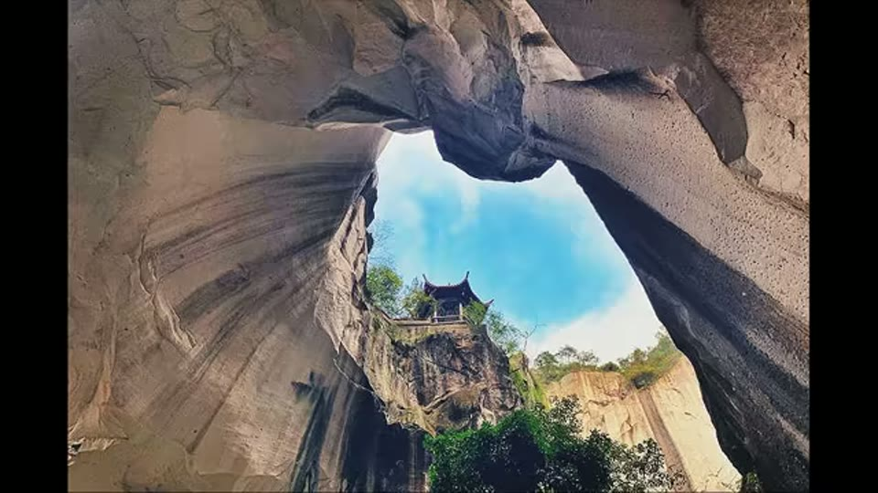
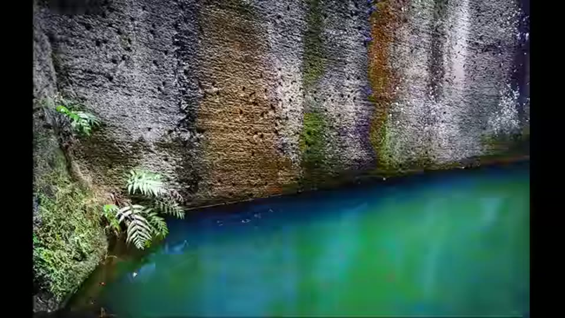
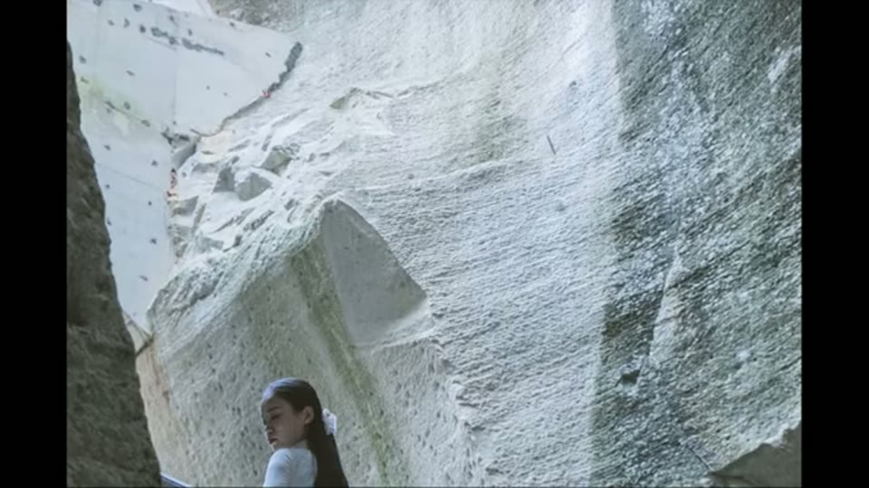
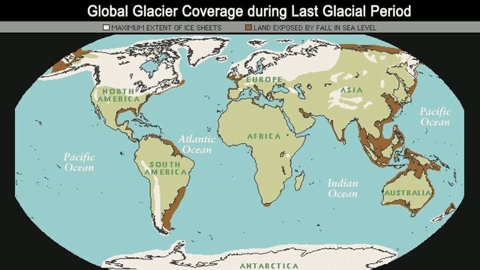

Curious Being
Were Ancient Chinese Caves Carved by Unknown Technology?
Tina · 15 min · watch on YouTube · summarised 2026-09-27
Changyu, in Zhejiang, is the largest ancient stone quarry in China, and the video's real subject is not the tool marks but a question about accounting: where did the stone go?
The site
00:41–03:20 Changyu covers about 16 km² and holds over 1,300 interconnected caves, some more than 70 m high. The stone is tuff, volcanic ash lithified into rock, and she notes the porosity as the likely reason for small holes in some chambers.
The scale figure she keeps returning to: the largest single complex holds 348 caves, about a quarter of the system, and that quarter alone yielded over 1.3 million cubic metres of stone — more than half the volume of the Great Pyramid.
The accepted method is that workers opened a hole at the hilltop and dug downward, widening as they went until chambers broke into their neighbours, producing the multi-level labyrinth. The documented age is over 1,500 years.
She notes, as she did at Longyou, that the sculptures and calligraphy at the site were added later as tourist attractions 01:00–01:06. Some caves are flooded and their depth has never been surveyed. Several have notable acoustics and one is used as an auditorium.


The quarry is very large, worked downward from openings at the top, and some chambers are now flooded to unmeasured depth.
The marks
04:16–06:08 She identifies two kinds, and the description of the first is the most concrete line in the video: uniform, continuous, horizontal marks, each parallel to the next and tightly spaced, "like a fine-tooth comb combed lightly over sand".
Her objection to hand tools is the same one she makes everywhere: it is unnatural to hammer a chisel horizontally, chisels suit small detailed work, and a mason could not carry an accurate continuous horizontal line around the circumference of a large chamber — let alone countless parallel ones. A pickaxe cannot be swung sideways.
The second kind are diagonal, uniform and oversized. She matches the horizontal marks to Yangshan and the banded diagonal ones to Longyou, and both to modern continuous miners and rock wheels.
Two dating arguments about the marks themselves:
- The quarry was abandoned before modern machinery reached the site, so the marks cannot be recent workings.
- The caves and cliffs carry consistent water staining from top to bottom across the marked surfaces, so the marks predate the water.


One family of marks at Changyu is continuous, horizontal and tightly parallel — she describes it as a fine-tooth comb drawn across sand.
The argument that carries the video
08:00–10:06 Changyu is not unique. She counts over 20 similar ancient quarries in China, some dated over 2,000 years, several indistinguishable from each other in photographs. Zhejiang alone holds more than 15 of them and over 3,000 man-made underground caves — Longyou among them.
Then the question. Quarrying on that scale implies building on that scale. But there are no large-scale ancient stone structures in China, and she explains why correctly: stone was never the main construction material. Wood and rammed earth were, with stone used for sculpture, paving, bridges and smaller works — which is also why so little older than a thousand years survives.
So: an astronomical quantity of stone, and nothing built from it.
Her answer
10:37–14:50 Zhejiang sits on the East China Sea, two-thirds of which is shallow continental shelf. At the last glacial maximum sea level was about 120 m lower, and nearly all of that shelf was dry land connecting the mainland to Taiwan and the Japanese archipelago. East China was ice-free and perhaps 7 °C cooler — still mild enough for vegetation and crops — and the glacial period ran over 100,000 years, which she offers as time enough for a civilisation.
Her proposal is that the quarries are far older than credited, were rediscovered and reused about 1,500 years ago by people who took the credit, and that what was built from the stone now lies submerged and unsurveyed. She notes the Yonaguni Monument, under 300 miles away and 26 m down, while saying plainly that whether it is man-made is disputed.
She closes with two supporting notes of unequal weight: a Chinese alchemist writing 1,700 years ago recorded a tale of an immortal who had seen the East China Sea turn to fields three times, which became an idiom for upheaval — and Palaeolithic sites in Zhejiang show layers of marine transgression with a layer of human activity between them.

At the last glacial maximum the East China Sea shelf was dry land, so anything built on it would now be submerged.
What you can check yourself
- The quarry statistics are published — area, cave count, chamber heights, and the 1.3 million cubic metre figure for the largest complex.
- The "no large stone buildings" premise is checkable and she states it accurately: Chinese monumental architecture is timber and rammed earth.
- The count of similar quarries in Zhejiang can be checked against Chinese survey literature.
- Sea level at the last glacial maximum is standard palaeoclimate and the −120 m figure is uncontroversial.
- The marine transgression layers at Zhejiang Palaeolithic sites are a published observation rather than a resemblance, and can be looked up.
- The water staining running across the tool marks is a physical relationship anyone at the site can photograph.
What the video does not settle
- Beit Guvrin is not volcanic stone. She compares Changyu with the bell caves at Beit Guvrin-Maresha and says the two sites are "carved from the same volcanic stone" 03:21–03:43. Her own video on that site describes soft Judean chalk, and the comparison here rests on the material being the same.
- Where the stone went is asked and not investigated. No survey of local construction, no accounting of the province's stone use, and no estimate of what a thousand years of ordinary demand would absorb.
- Tuff is the softest stone in her comparison set. Her own later video on the Oya quarry puts tuff at 4–6 on the Mohs scale and concedes that Oya's near-identical layered marks were cut by pickaxe into the 1950s. That is not addressed here.
- The two dating arguments are about age. Water staining across the marks and abandonment before modern machinery both bear on when the marks were made. What made them is not addressed by either.
- No underwater survey is cited or proposed. The absence of investigation on the shelf is given as the reason to expect something there.
- The temperature argument is about habitability. A 7 °C drop and an exposed shelf are offered; nothing connects either to Changyu.
- The place name had to be recovered. The auto-transcript renders it "changu", "chongi", "chongu" and "Chu"; the channel's own chapter title says "Chongqing Caves", which is a different place entirely. Changyu Dongtian in Wenling, Zhejiang is the site whose published description — largest ancient quarry in China, 1,300 caves, tuff, flooded chambers, a cave used as a concert hall — matches everything stated. The channel uses the name Changyu elsewhere. Recorded as inferred.
- Her quarry map does not show what the narration says. The pins are dropped on a Google My Maps screenshot, none of them is labelled, and a separate cluster of three or four sits far to the south near Guangdong — well outside the Zhejiang concentration the argument is about.
- The frame running under "fine-tooth comb" shows vertical mineral staining, not fine horizontal tool marks. The marks she means are visible in the labelled frame a few seconds earlier; this one is a flooded face streaked top to bottom in ochre and rust.